Sésame
SésameVos finances.
Personne d'autre.Your finances.
Nobody else's.
Tous vos comptes, budgets, épargne et prêts, dans une appli qui ne parle à aucun serveur. Importez vos relevés : Sésame range tout, et tout reste chiffré chez vous. All your accounts, budgets, savings and loans, in an app that talks to no server. Import your statements: Sesame files everything, and everything stays encrypted at home.
Windows Android Linux · français et anglaisFrench and English
Essayez-le ici, tout de suite.Try it here, right now.
Une visite guidée vous montre l'essentiel en une minute : importer un relevé, classer, suivre ses budgets. Les données sont fictives, rien n'est enregistré.A guided tour shows you the essentials in one minute: importing a statement, sorting, following your budgets. The data is fictional, nothing is saved.
Sésame existe sur téléphone et sur ordinateur. Choisissez la version à essayer :Sesame runs on phones and computers. Pick the version to try:
Astuce : tournez votre téléphone pour voir la version ordinateur en plus grand.Tip: turn your phone sideways to see the computer version larger.
Combien il me reste, vraiment ?How much do I really have left?
L'argent que vous pouvez dépenser, tous comptes réunis, en euros, en francs CFA ou en dollars. L'épargne et les poches sont mises à part : elles ont un but.The money you can spend, all accounts together, in euros, CFA francs or dollars. Savings and pockets are kept aside: they have a purpose.
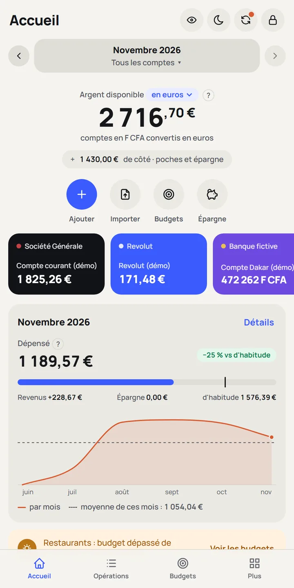
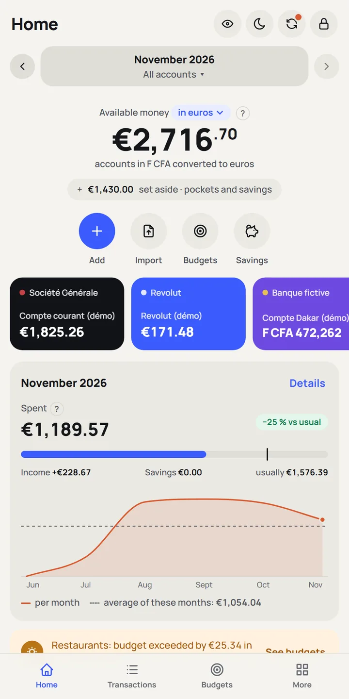
Où part mon argent ?Where does my money go?
Chaque opération se range toute seule dans sa catégorie. Vous voyez ce qui pèse le plus, et ce qui change par rapport à d'habitude.Every transaction files itself into its category. You see what weighs most, and what changes compared to usual.
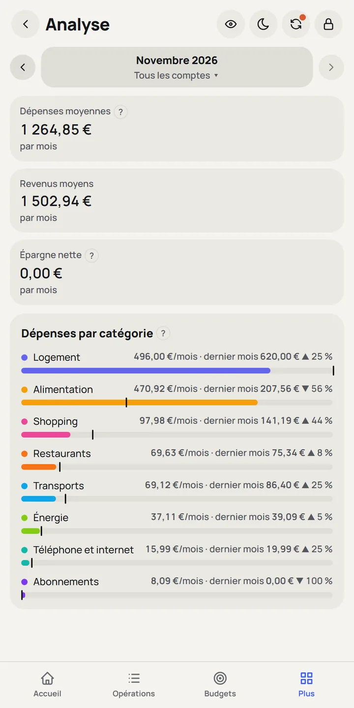
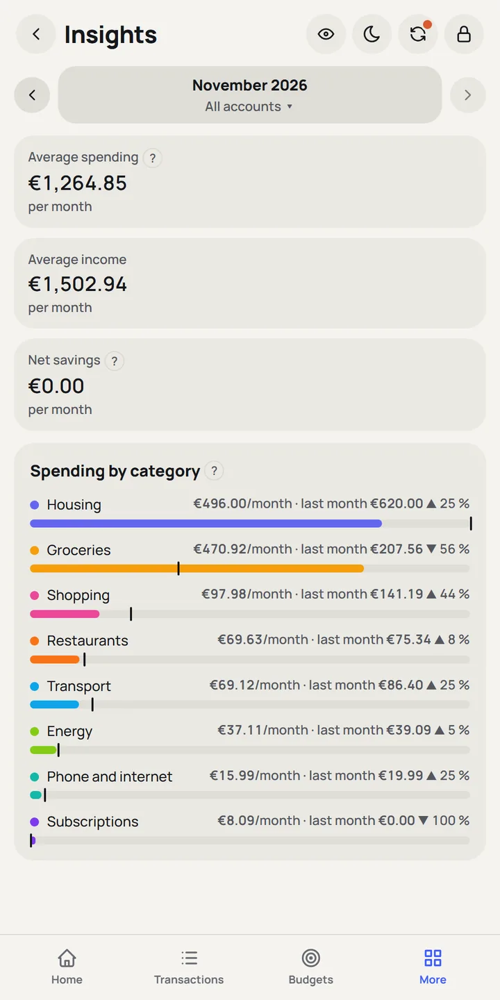
Est-ce que je tiens mes budgets ?Am I keeping to my budgets?
Sésame propose des budgets d'après vos habitudes et vous dit ce qu'il reste par jour. Il prévient avant que ça dérape, pas après.Sesame suggests budgets from your habits and tells you what's left per day. It warns you before things drift, not after.
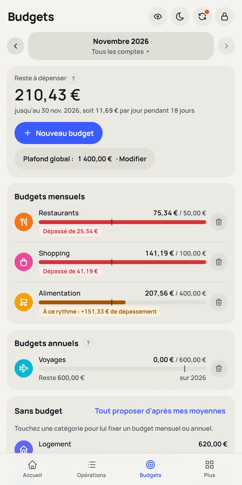
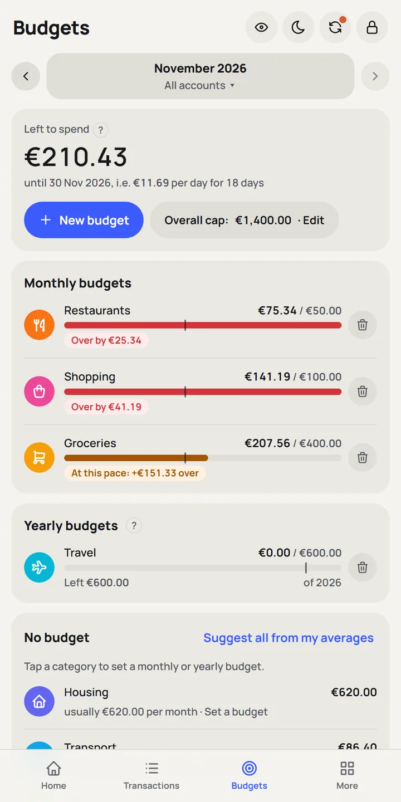
Vais-je finir à découvert ?Will I end up overdrawn?
Salaire, loyer et abonnements à leur date : la prévision montre votre argent sur les 3 prochains mois et repère le jour où ça coince.Salary, rent and subscriptions on their dates: the forecast shows your money over the next 3 months and spots the day things get tight.
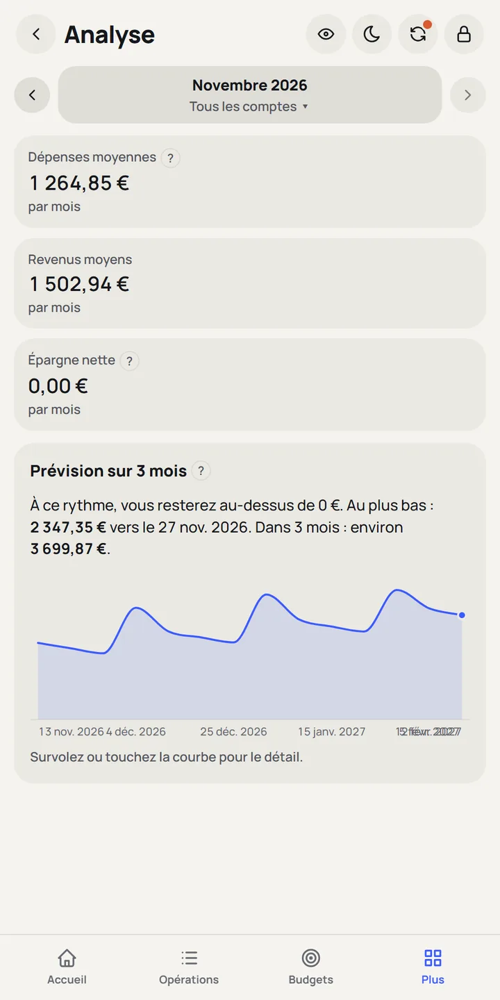
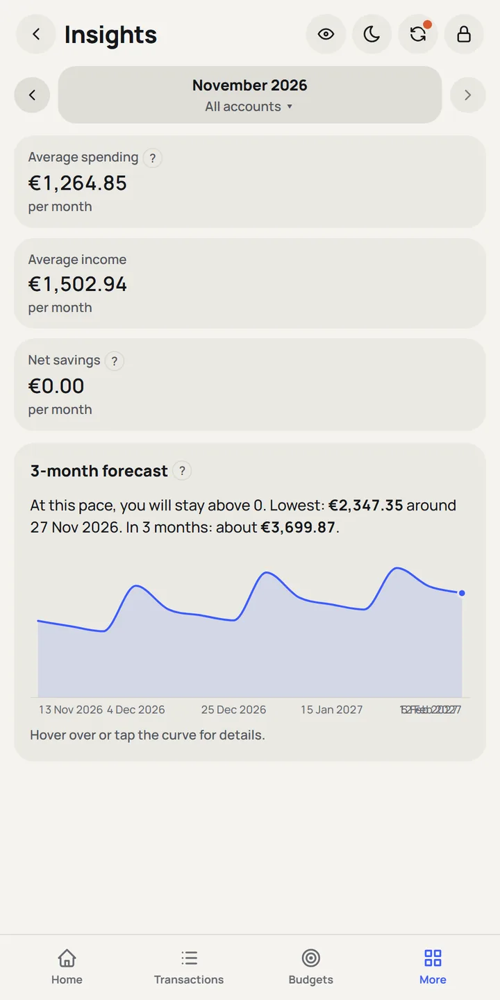
Et qui voit mes données ?And who sees my data?
Personne. Sésame ne se connecte ni à votre banque, ni à un serveur. Vos données ne quittent vos appareils que si vous les envoyez vous-même.Nobody. Sesame connects neither to your bank nor to a server. Your data only leaves your devices if you send it yourself.
- Tout est chiffré avec votre mot de passe (AES-256 et Argon2id, comme les gestionnaires de mots de passe).Everything is encrypted with your password (AES-256 and Argon2id, like password managers).
- Rien en ligne : ni compte, ni pistage, ni sauvegarde cloud cachée.Nothing online: no account, no tracking, no hidden cloud backup.
- Une clé de récupération, remise à la création, si vous oubliez le mot de passe.A recovery key, given at setup, in case you forget the password.
- L'empreinte sur Android : la clé reste dans le coffre-fort matériel du téléphone.Fingerprint on Android: the key stays in the phone's hardware vault.
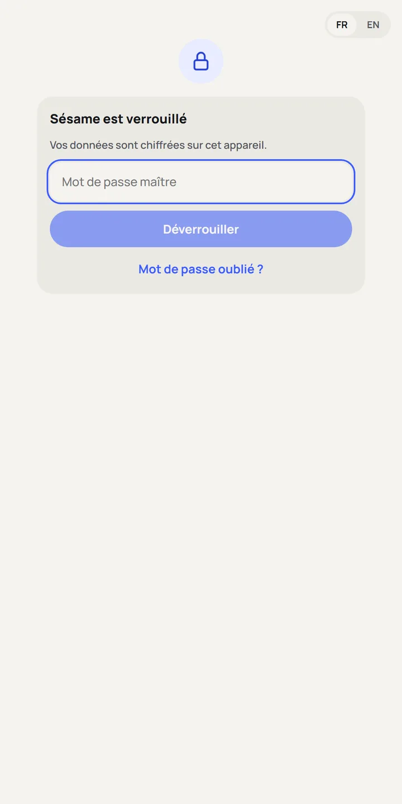
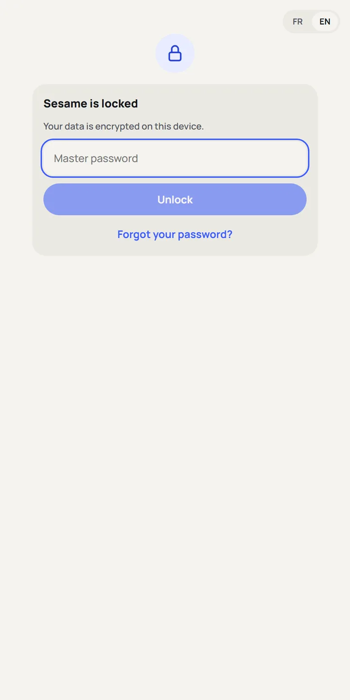
Toutes vos banques, sur téléphone et sur ordinateur.All your banks, on phone and computer.
Importez les relevés de n'importe quelle banque, en PDF, CSV, Excel, OFX, QIF ou CAMT, en français ou en anglais. Vos appareils s'échangent leurs changements par un simple fichier : Quick Share, câble, clé USB ou e-mail. Toujours sans cloud.Import statements from any bank, as PDF, CSV, Excel, OFX, QIF or CAMT, in French or English. Your devices swap their changes through a simple file: Quick Share, cable, USB stick or email. Always without the cloud.
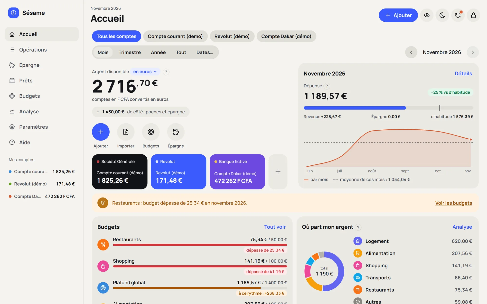
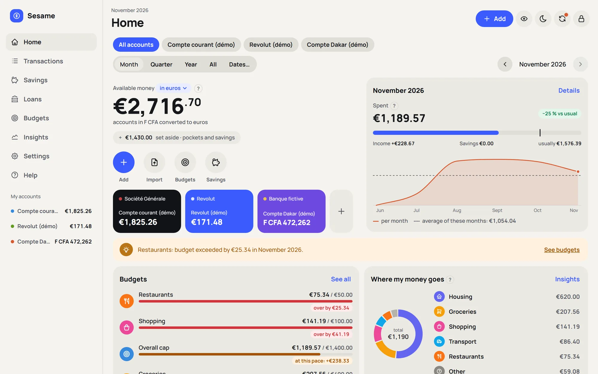
Ce qui change avec Sésame.What Sesame does differently.
La plupart des applis de budget se connectent à votre banque à travers leurs serveurs. Sésame fait l'inverse.Most budgeting apps connect to your bank through their servers. Sesame does the opposite.
| Sésame | Applis connectées à la banqueBank-connected apps | TableurSpreadsheet | |
|---|---|---|---|
| Vos identifiants bancairesYour bank login | Restent à vousStay yours | Confiés à un service tiersHanded to a third party | Restent à vousStay yours |
| Où sont vos donnéesWhere your data lives | Sur vos appareils, chiffréesOn your devices, encrypted | Sur les serveurs de l'éditeurOn the provider's servers | Sur votre ordinateur, souvent en clairOn your computer, often unencrypted |
| Catégories automatiquesAutomatic categories | Oui, et elles apprennentYes, and they learn | OuiYes | À la mainBy hand |
| Budgets et prévisionBudgets and forecast | InclusIncluded | Selon l'appliDepends on the app | À construire soi-mêmeBuild it yourself |
| Plusieurs banques et devisesSeveral banks and currencies | Toutes, dont le franc CFAAll, including the CFA franc | Celles que l'appli gèreThe ones the app supports | À la mainBy hand |
| Sans connexion internetWorks offline | OuiYes | NonNo | OuiYes |
| PrixPrice | Gratuit et libreFree and open source | Gratuit ou abonnementFree or subscription | Selon le logicielDepends on the software |
Pourquoi Sésame existe.Why Sesame exists.
Tout est parti d'un besoin simple : suivre plusieurs banques (une banque traditionnelle, une néobanque, une banque en ligne) et deux monnaies, l'euro et le franc CFA, sans confier ses identifiants bancaires à une entreprise.It all started with a simple need: following several banks (a traditional bank, a neobank, an online bank) and two currencies, the euro and the CFA franc, without handing one's bank login to a company.
Les applis existantes demandaient toutes de se connecter à la banque à travers leurs serveurs. Sésame a pris le chemin inverse : tout se passe sur vos appareils, rien n'en sort. Vos relevés suffisent.Existing apps all asked to connect to the bank through their servers. Sesame took the opposite path: everything happens on your devices, nothing leaves them. Your statements are enough.
C'est un logiciel libre : son code est public, chacun peut vérifier ce qu'il fait, et il le restera.It is free software: its code is public, anyone can check what it does, and it will stay that way.
Questions fréquentesFrequently asked questions
Est-ce vraiment gratuit ?Is it really free?
Oui. Sésame est un logiciel libre (licence MIT) : pas de publicité, pas d'abonnement, pas de version payante.Yes. Sesame is free software (MIT licence): no ads, no subscription, no paid tier.
Quelles banques sont prises en charge ?Which banks are supported?
Toutes celles qui vous donnent un relevé en PDF, CSV, Excel, OFX, QIF ou CAMT, en français ou en anglais. Sésame reconnaît les colonnes d'après leur contenu. La première fois qu'il voit un format, il vous montre un aperçu à valider ; ensuite, c'est automatique.Any bank that gives you a statement as PDF, CSV, Excel, OFX, QIF or CAMT, in French or English. Sesame recognises columns from their content. The first time it sees a format, it shows you a preview to confirm; after that, it is automatic.
Et si j'oublie mon mot de passe ?What if I forget my password?
La clé de récupération, remise à la création du coffre, rouvre vos données et vous laisse choisir un nouveau mot de passe. Sans elle, personne ne peut les récupérer : c'est le prix d'un vrai chiffrement.The recovery key, given when you create your vault, reopens your data and lets you choose a new password. Without it, nobody can recover them: that is the price of real encryption.
Et si je perds mon téléphone ?What if I lose my phone?
Vos données y sont chiffrées : illisibles sans votre mot de passe. Pour tout retrouver sur un nouvel appareil, exportez de temps en temps une sauvegarde chiffrée (Paramètres → Sauvegarde) et gardez-la sur un autre appareil.Your data is encrypted on it: unreadable without your password. To get everything back on a new device, export an encrypted backup from time to time (Settings → Backup) and keep it on another device.
Comment synchroniser mon PC et mon téléphone ?How do I sync my PC and phone?
Sésame prépare un petit fichier chiffré avec vos derniers changements. Envoyez-le par Quick Share, Bluetooth, câble ou e-mail : l'autre appareil l'ouvre et fusionne tout. Aucun cloud au milieu.Sesame prepares a small encrypted file with your latest changes. Send it by Quick Share, Bluetooth, cable or email: the other device opens it and merges everything. No cloud in between.
Pourquoi Windows ou Android affichent un avertissement ?Why do Windows or Android show a warning?
Parce que Sésame n'est pas signé par un certificat payant et ne passe pas par le Play Store. Son code est public sur GitHub, et chaque version est construite automatiquement à partir de ce code.Because Sesame is not signed with a paid certificate and does not go through the Play Store. Its code is public on GitHub, and every version is built automatically from that code.
Comment se font les mises à jour ?How do updates work?
Au démarrage, Sésame vous prévient quand une nouvelle version sort et vous montre ce qui change ; le bouton « Mettre à jour » ouvre le bon fichier. Vous l'installez par-dessus : vos données sont gardées.At startup, Sesame tells you when a new version is out and shows you what changed; the “Update” button opens the right file. You install it on top: your data is kept.
Et sur iPhone ou Mac ?What about iPhone or Mac?
Pas pour l'instant : Sésame existe sur Windows, Android et Linux.Not for now: Sesame runs on Windows, Android and Linux.
Installer SésameInstall Sesame
Gratuit et libre. Choisissez votre appareil : chaque version lit les mêmes données.Free and open source. Pick your device: every version reads the same data.
- Téléchargez l'installeur.
- Ouvrez-le. Windows peut afficher « Windows a protégé votre ordinateur » : cliquez sur Informations complémentaires, puis Exécuter quand même (l'appli n'est pas encore signée par un certificat payant).
- Suivez l'installation, puis lancez Sésame depuis le menu Démarrer.
- Créez votre mot de passe et notez votre clé de récupération : un petit guide vous accompagne ensuite.
- Download the installer.
- Open it. Windows may show “Windows protected your PC”: click More info, then Run anyway (the app is not yet signed with a paid certificate).
- Follow the installer, then start Sesame from the Start menu.
- Create your password and write down your recovery key: a short guide then walks you through.
- Sur votre téléphone, téléchargez le fichier APK.
- Ouvrez-le. Android demande d'autoriser l'installation depuis cette source (votre navigateur ou l'appli Fichiers) : acceptez pour cette fois.
- Touchez Installer, puis ouvrez Sésame.
- Dans Paramètres → Sécurité, vous pouvez activer l'ouverture par empreinte.
- On your phone, download the APK file.
- Open it. Android asks you to allow installs from this source (your browser or Files app): allow it this once.
- Tap Install, then open Sesame.
- In Settings → Security, you can turn on fingerprint unlock.
Les mises à jour s'installent de la même façon, par-dessus : vos données sont gardées. Pour qu'elles arrivent encore plus simplement, l'appli gratuite Obtainium peut suivre Sésame : ajoutez-y l'adresse github.com/Fram-sudo/sesame.Updates install the same way, on top: your data is kept. For even simpler updates, the free Obtainium app can follow Sesame: add the address github.com/Fram-sudo/sesame.
- Téléchargez le paquet
.deb. - Double-cliquez dessus et choisissez Installer (ou utilisez la commande ci-dessous).
- Lancez Sésame depuis vos applications.
- Download the
.debpackage. - Double-click it and choose Install (or use the command below).
- Start Sesame from your applications.
sudo apt install ./sesame-linux.deb- Téléchargez l'
AppImage: un seul fichier qui fonctionne sur la plupart des distributions (CachyOS, Arch, Fedora…). - Rendez-le exécutable : clic droit → Propriétés → Autoriser l'exécution, ou la commande ci-dessous.
- Double-cliquez dessus pour lancer Sésame.
- Download the
AppImage: a single file that runs on most distributions (CachyOS, Arch, Fedora…). - Make it executable: right-click → Properties → Allow executing, or use the command below.
- Double-click it to start Sesame.
chmod +x Sesame-Linux.AppImage && ./Sesame-Linux.AppImageIl faut la bibliothèque WebKitGTK 4.1 (déjà présente sur la plupart des bureaux). Sur Arch / CachyOS : sudo pacman -S webkit2gtk-4.1.WebKitGTK 4.1 is required (already present on most desktops). On Arch / CachyOS: sudo pacman -S webkit2gtk-4.1.
Déjà Sésame sur un autre appareil ? Exportez une sauvegarde (Paramètres → Sauvegarde), restaurez-la sur le nouveau, puis synchronisez vos changements.Already using Sesame on another device? Export a backup (Settings → Backup), restore it on the new one, then sync your changes.
Historique des versionsVersion history
Sésame vous prévient quand une nouvelle version sort. Voici ce qui a changé à chaque fois.Sesame tells you when a new version is out. Here is what changed each time.